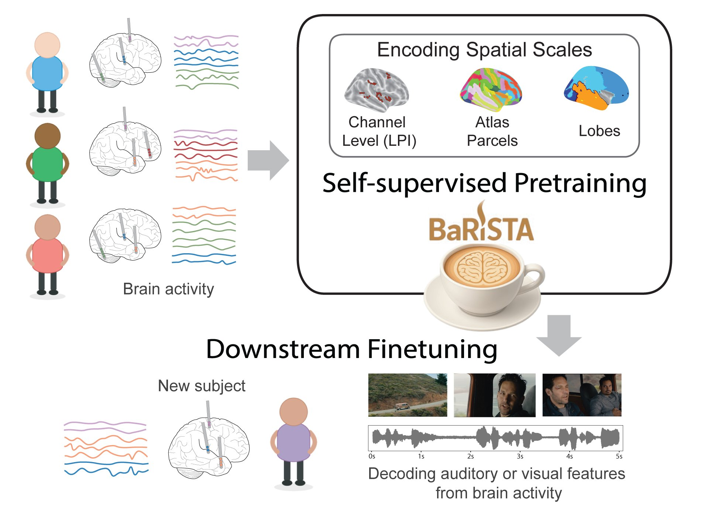

About
I'm a third-year PhD student in the Thomas Lord Department of Computer Science at the University of Southern California, working with Prof. Maryam Shanechi. Before starting my PhD, I received my B.S. in Computer Engineering from Sharif University of Technology.
My research interest lies at the intersection of AI and neuroscience. I enjoy finding inspiration in the latest advances in AI to develop new tools, particularly through sequence and time-series modeling, that can address unique challenges of neural decoding. I’m currently excited about the potential of foundation models for neural activity, which could help deepen our understanding of the brain and cognition. I’m also curious about how ideas from the brain itself might guide us toward building more capable AI systems.
Outside of research, I love being in nature, painting, and photographing the magnificent Los Angeles sunsets and the enchanting moon.
Featured Research

BaRISTA
Brain scale informed spatiotemporal representation of human intracranial neural activity
BaRISTA learns representations of human intracranial neural activity (iEEG) through latent masked pretraining and compares representation learning across different spatial scales. The resulting representations achieve strong decoding performance across movie-feature prediction tasks.
Publications & Presentations
- Chau, G., Hashemi, S., Gwon, Y., Patel, E., DeWitt, J., Wang, C., et al. "iMINDBench: iEEG Multi-Institution Neural Decoding Benchmark." NeurIPS 2026 Workshop. [Leaderboard]
- Oganesian, LL.*, Hashemi, S.*, Shanechi, MM. "BaRISTA: Brain scale informed spatiotemporal representation of human intracranial neural activity." In Proceedings of the Conference on Neural Information Processing Systems (NeurIPS), 2025. [Code]
- Hashemi, S.*, Oganesian, LL.*, Shanechi, MM. "Cross-subject spatiotemporal modeling of multi-regional intracranial human brain activity." Society for Neuroscience, 54th Annual Meeting, San Diego, CA.
- Hashemi, S.*, Oganesian, LL.*, Shanechi, MM. "Learning spatiotemporal models of intracranial human neural recordings using masked reconstruction." IEEE Engineering in Medicine and Biology Conference (EMBC), 47th Annual Meeting, Copenhagen, Denmark.
Selected Projects
Machine Learning
Utilized transfer learning for a system to classify motor imagery in stroke patients from EEG data. (Neuromatch 2023)
Implemented and compared several basic domain adaptation algorithms on image classification
Systems
Implemented edge detection for images based on SIMD computations using NVIDIA CUDA.